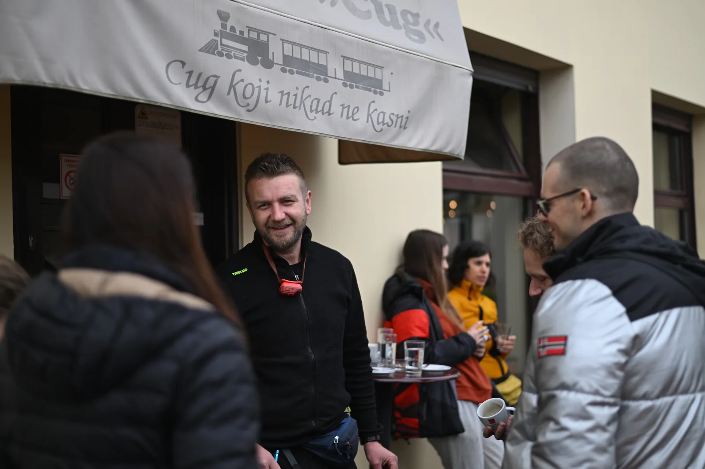

Norenje u Ponorcu
Cilj ovog izleta bilo je iskusiti kretanje u špilji s vodenim tokom. Međutim, vrlo brzo nakon prvih ispuštenih zvukova ushićenja poput "ovo je moj najbolji dan u životu" nekoliko metara od početka toka započeo je tek…

Napisao: Rok Levar
Fotografije: Tomislav Mikić, Dalibor Paar, arhiva 55. speleološke škole
22.-23.03.25 – Ponorac. Okupljanje
Ako ste vjerni pratitelj izvještaja 55. zagrebačke speleo škole, već ste vjerojatno upoznati s činjenicom da je nemogućnost ispijanja jutarnje kave prije polazaka na izlet kod NSK obeshrabrila mnoge. Zbog toga, ovaj put okupili smo se kako bismo se okrijepili ranog subotnjeg jutra u Cugu, gdje je ovaj put ipak bilo željene cuge za sve.
Iako je ispijanje kave ovaj put prošlo bez previše zastajkivanja, druge stvari nisu išle toliko glatko. Naime, Miško, the crveni kombi, se večer prije razbolio i morao na hitnu transplantaciju akumulatora. Srećom, operacija je prošla dobro i samo 30 minuta kasnije od planiranog u 8.30 već je bio spreman za novu operaciju - Ponorac!
Nakon 2.5 sata ugodne vožnje ili 2.5 sata ugodnog sna za neke, prva kava u Cugu već je postala davna prošlost pa smo se ponovo okupili u kultnom mjestu općine Rakovica – Caffe bar i pizzeria Rendulić. Tu je pala i druga kava. S dolaskom nas tridesetak oko 11 sati dogodio se dotad nezabilježeni priljev posjetitelja tako da je broj osoba u mjestu, uključujući lokalno stanovništvo, porastao za čak više od 1% posto! Onaj dio ekipe koje je među prvima stigao na odredište bili su i nagrađeni toplom flis dekicom od srdačne gazdarice.
Malo iza 11 sati, sumnjiva kolona predvođena Miškom krenula je u smjeru sjeveroistoka. Nakon kraće desetominutne vožnje, zauzeli smo poziciju uz pomalo nasumični rub ceste u šumi. Međutim, sumnjivost je pala u vodu onog trenutka kad je svaki automobil naše svadbene povorke bio dodatno ukrašen isprintanim logom SOV-a, koji se s ponosom sunčao pod vjetrobranskim staklom sve vrijeme dok nas nije bilo.
Onog trenutka kad je svaki od školaraca istovario opremu iz auta i požalio zbog količine stvari koje je spakirao, s veseljem se još i nesebično ponudio ponijeti još dva neoprenska odijela! Pošteno natovareni, krenusmo prema kampu u jednom mahu, ali tri grupe. Bila je to opuštena, sasvim prosječna, ugodna i laganija šetnjica šumskom stazom do ponikvi nalik neuređenog prostora, usred još neprolistale šume, u rano proljeće. Na samom dnu tog ‘lijevka’ našlo se centralno mjesto kampa za večernje druženje. U iznenađujuće ‘brzom’ vremenu od preko sat i pol sastavili smo bivke na najpoželjnijim mjestima. Nagrada za rekordno brzo postavljanje bivaka oko 14 sati bila je već poznata plava cerada (‘Velebitaški stol’), koja se lagano počela puniti posudicama. Nakon Teinog proslavljenog banana breda s prvog izleta te Ana Marijine riblje paštete na drugom izletu, ovog puta Teo je ponovno visoko kotirao. Slavni banana bred tek je bio uvod u ovoizletnji vrhunac obilnog velebitaškog stola - cimet rolice!! Međutim, oni s najistančanijim nepcem mogli su otkriti i tajni hit – namaz od lješnjaka, skriven kao piratsko blago u minijaturnoj staklenci među hrpom drugih specijaliteta. Svakako se ne smije zaboraviti spomenuti širok izbor domaćih štrudlica, kiflica, pizza, pasti, narezaka, namaza i svježeg povrća. Ovaj put, trebalo je jesti stvarno obilno, jer od tog trenutka hrana se neće namirisati do duboko uvečer.
A tada, punih trbuha, krenulo je postrojavanje, prozivanje i preradpodjela u dvije grupe. Za jednu polovicu školaraca krenuo je najmanje dramatičan dio. Svatko si je izabrao svoj novi špiljski autfit koji se sastojao od pripijenog gornjeg i donjeg dijela ili jednodijelnog neoprenskog odijela te dvije papučice za vodu. Preko svega trebalo je i nategnuti korduru. Ako mislite da je jednostavno ugurati se u to ‘gumeno’ čudo, prevarili ste se. Nakon preko pola sata borbe, neopreni su bili na nama, ali tek onda je krenula nova muka – navlačenje čizama. Nakon još jednog ekspresnog oblačenja za špilju krenule su već prve nuspojave. Osjetio se udar topline koji je trajao cijelo vrijeme dok pingvin hodom nismo došli do ulaza u Ponorac i već ubrzo nakon toga zašli u vodu.
Cilj ovog izleta bilo je iskusiti kretanje u špilji s vodenim tokom. Međutim, vrlo brzo nakon prvih ispuštenih zvukova ushićenja poput "ovo je moj najbolji dan u životu" nekoliko metara od početka toka započeo je tek pravi dragulj ovog izleta. Prvo džuboks bez ubacivanja žetončića, a onda... Koncertnom dvoranom Ponorac zaorili su se prvi taktovi najvećih opernih klasika. U izvedbi vrsne sopranistice Ive, proslavljenog tenora (moje malenkosti), te ostatkom ansambla predvođenima maestrom Daliborom Paarom, mogla su se čuti djela inače izvođena pod poznatim svjetskim imenima poput Luciana Pavarottija, Andree Boccellija i dr. Nakon dovoljnog broja ponovnog zavijanja "Ave Marije", "Con te partira" i nezaboravnog hita 40-ih godina prošlog stoljeća "The Lion Sleeps tonight" odorkestrirali smo cca. 780 metara u unutrašnjost do sifona. Tamo smo se upoznali s arijadninom niti, nekim od priča vezanim uz speleoronjenje, saznali da se Ponorac u nastavku spaja s Jovinom pećinom te okinuli grupnu fotku preko Daliborove kamere na kacigi.
Uputili smo se prema izlazu, a da smo saznali da je njegova kamera cijelo vrijeme snimala i zvuk, pitanje je koliko bi odzvanjali cijelom špiljom... Iako je bio zaslužen, aplauz nakon trosatnjeg koncerta je izostao, ali shvatit ćemo da je razlog tome što su nam se dlanovi smrznuli. Za više detalja o tome najbolje se obratiti Marinu.
Kad smo konačno izašli iz špilje, i mrak je već pao, a nas je dočekao romantičan prizor penjanja ostatka školaraca koji su svojim ‘tikama’ (čeone lampe) osvjetljavali stijenje. Kasna večera u 10 sati uz oganj bila je kruna dana, uz velebitaške gitarske klasike i grah koji se krćkao u kotlu sve vrijeme dok smo mi obavljali svoje školske zadatke. Ovim putem u ime svih školaraca hvala svima koji su kuhali za sve nas. Iako se većina družine veselo opustila bez kiše u krugu, našlo se i par onih neprimjerenih koji su uspjeli odmah zaspati među svima. I među lišćem. Ali ovaj put nećemo ih imenovati – nije pristojno. Svi u bivak. Pokušaj spavanja. Tapkanje kiše po ceradi. A onda taman kad sklopiš oko evo i prodornog nam glasa voditelja škole u 8 sati - DORUUUUUUUUUUUUUUČAK!
Drugog jutra, grupe su zamijenile uloge: jedni su prolazili špilju s neoprenima, a drugi dali najbolje od sebe da pokažu svoje crtačke sposobnosti (vježba topografskog crtanja) pred Barbarom i Gogom. Nakon njihovog uvodnog predavanja, svatko je prihvatio svoju ulogu. Jedan mjeri, drugi crta, treći postavlja točku, a četvrti... je isto tu... Zavrtili smo uloge u krug i nakon prvog glazbenog dana, nastala su prava likovna remek-djela u obliku nacrta koja prikazuju poligonski vlak dijela Ponorca. Nakon što su olovka, DistoX i kameni čunjići za markaciju svakome prošli kroz ruke, izašli smo iz špilje.
Za kraj, još malo penjanja i spuštanja po stijeni, pa povratak u kamp i opet varivo. Sreća je bila na našoj strani – unatoč lošim prognozama ovaj vikend zaobišlo nas je da smo smočeni, osim toga što smo se svojevoljno smocili u Ponorcu... Krasan vikend završio je završnim riječima voditelja škole i osvrtom: "Bili ste vrlo solidni!"
I ništa, to je to. Zajedničko pospremanje, jedan suhi i jedan mokri neopren za nazad. Polazak. Ugodna vožnja autocestom. Dolazak u Zagreb u kasnim večernjim satima i zasluženi odmor. Do srijede. Toliko od mene i izvještaja s trećeg izleta 55. zagrebačke speleo škole!